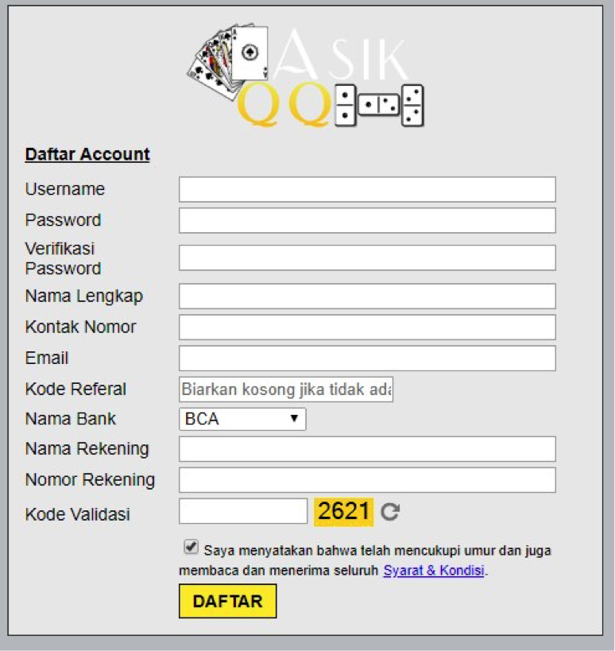
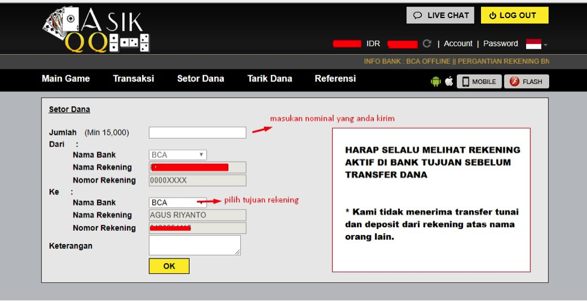

Artikel ini akan sedikit lebih panjang dibanding dengan artikel lainnya. Apa saja yang akan kita bahas di halaman ini? Berikut daftar isi pembahasan kita kali ini :
- Cara Daftar / Membuat ID di AsikQQ.
- Hal Yang Perlu Anda Perhatikan Saat Daftar.
- Cara Melakukan Deposit / Setor Dana.
- Cara Melakukan Withdraw / Tarik Dana.
Jika keperluan promo yang anda cari, anda dapat membaca artikel berikut : Promo / Bonus Melimpah Yang Tersedia Di Situs Judi AsikQQ .
Sebelum kita start panduan ini. Kami management asik qq ingin mengucapkan terima kasih kepada anda semua yang baru berkunjung dan bergabung di asikqq. Kami adalah salah satu perusahaan game judi kartu online dengan uang asli terpercaya dan terbesar di Indonesia. Terima kasih untuk perhatian anda yang ingin bergabung di website kami. Terima kasih juga kepada para pemain lama kami yang setia bermain di asik qq. Kami akan selalu dan terus melakukan perubahan menuju arah yang lebih baik lagi. Tentunya dalam pelayanan, kualitas game, dan juga prioritas kami adalah kepuasan anda sendiri.
Untuk anda yang masih newbie dengan permainan game online ini. Kami akan berikan panduan lengkap dari awal sampai akhir hingga anda mengerti. Tapi jika anda malas membaca, anda bisa chatting dengan CS kami yang ready 24 jam setiap hari. Ada papan chat di sebalah kanan bawah layar anda saat ini. Anda bisa tanyakan apapun yang belum anda mengerti seputar permainan game online kami.
Cara Membuat ID / Daftar di AsikQQ
Ayo kita mulai dengan pembahasan pertama. Tentunya kita akan mulai dari cara melakukan pendaftaran. Jika tidak daftar terlebih dahulu, anda tidak akan bisa login dan tidak memiliki ID. Sebelum anda mendaftar, pastikan anda sudah memiliki rekening apapun itu untuk melakukan transaksi. Normalnya di asikqq tersedia bank BNI, BRI, BCA, Danamon, Mandiri, dan CIMB. Akan lebih baik kalau anda memiliki salah satu diantara 6 bank tersebut. Tapi jangan khawatir jika anda hanya memiliki rekening lain selain bank yang kami sebutkan. Anda tetap bisa melakukan daftar. Selain itu, pastikan anda memiliki nomor telephone + email yang aktif.
Baik, Untuk melakukan daftar, anda bisa masuk ke situs resmi kami, dan klik DAFTAR atau REGISTER yang ada di menubar. Setelah anda klik, akan keluar form pendaftaran seperti gambar di bawah ini.
- Username : Isi dengan username / ID yang mau anda gunakan untuk melakukan login nanti.
- Password : Isi dengan kata sandi atau password yang ingin anda gunakan untuk melakukan login.
- Verifikasi Password : Tulis kembali / ulangi password yang sudah anda masukan diatas.
- Nama Lengkap : Tulis dengan nama asli anda sendiri.
- Kontak Nomor : Masukan nomor HP anda yang aktif hingga sekarang.
- Email : Isi dengan email anda yang valid dan aktif juga hingga saat ini.
- Kode Referral : Kosongkan jika tidak ada teman memberikan anda kode referral.
- Nama Bank : Pilih jenis bank yang anda pakai untuk melakukan transaksi. Jika anda pakai bank lain selain 6 jenis bank yang tersedia, anda harus pilih bank BRI.
- Nama Rekening : Masukan nama rekening yang anda gunakan untuk melakukan transaksi. Juga tulis keterangan disini JIKA anda menggunakan bank lain selain 6 bank yang tersedia. Misalkan anda menggunakan bank PERMATA. Jenis bank di atas tadi anda pilih bank BRI, lalu nama rekening anda misalkan BUDI. Tulis di form pendaftaran seperti ini : BUDI (BANK PERMATA). Agar CS mudah memahaminya dan mudah proses depo wd anda nantinya.
- Nomor Rekening : Isi dengan nomor rekening yang anda gunakan untuk melakukan transaksi.
- Kode Validasi : Silahkan isi dengan kode 4 angka yang ada di kotak kuning sebelahnya.
Jika anda sudah selesai isi form tersebut, silahkan tekan tombol DAFTAR nya. Kalau gagal, kemungkinan anda terlalu lama mengisi form tersebut. Atau bisa juga gagal karena format yang anda masukan salah. Beberapa kolom di atas tidak diperbolehkan ada spasi, seperti kolom email, nomor rekening, dan kode referral (jika ada). Kalau masih gagal juga, coba hubungi cs dan minta bantuan untuk mendaftarkan ID anda.
Hal Yang Perlu Anda Ingat Saat Daftar
Perlu anda perhatikan beberapa hal yang akan kami sampaikan ini, demi keamanan ID anda sendiri. Untuk membuat ID, harap untuk tidak meminta tolong orang lain, selain CS sendiri. Karena jika anda meminta tolong kepada orang lain, data anda akan mudah diketahui. Meskipun itu teman anda sendiri, bahkan ada beberapa member yang kehilangan chip karena temannya sendiri. Ini adalah pengakuan dan pengalaman dari para member kami sendiri.
Data ID anda harus jaga sebaik mungkin sehingga tidak ada yang mengetahui kecuali diri anda sendiri dan pihak agen. Pihak asikqq sendiri memiliki procedure security yang cukup ketat. Namun, hal itu tidak akan berarti jika para member tidak menjaganya dengan benar.
Cara Melakukan Setor Dana / Deposit di AsikQQ
Jika anda masih newbie, kami yakin anda kurang mengerti dengan istilah DEPOSIT. Atau yang sering disingkat menjadi DP. Deposit di dalam dunia game judi online, supaya lebih mudah dipahami, kami artikan sebagai BELI CHIP. Saat anda ingin membeli chip, pastinya anda harus melakukan transfer uang melalui bank ke bank agen yang sudah tersedia. Jika anda tidak transfer uang, maka anda tidak akan memiliki chip untuk bermain.
Minimal DP di asik qq hanya sebesar Rp. 15.000 . Dengan melakukan DP Rp. 15.000 , anda sudah bisa bermain dan berkesempatan untuk menjadi pemenang uang hingga puluhan juta rupiah!
Berikut adalah langkah langkah cara melakukan deposit :
- Cek dahulu rekening agen yang aktif untuk melakukan DP. Hal ini amat sangat penting. Karena rekening sewaktu – waktu bisa berubah. Dan jika anda salah transfer, resikonya dana anda akan hangus atau mungkin tidak di proses. Anda pun akan sangat rugi. Maka dari itu, lebih baik sempatkan waktu untuk mengecek rekening tujuan sebelum transfer. Ada beberapa pilihan. Pertama cek langsung di menu SETOR DANA di dalam ID anda. Cara paling mudah, anda dapat chat langsung lewat livechat / BBM / WA / LINE yang tersedia. Tanyakan rekening yang aktif untuk melakukan DP. Nanti CS akan berikan nomor rekening kepada anda.
- Setelah mendapatkan rekening tujuan, silahkan kirim uang ke rekening tersebut melalui rekening yang anda daftarkan sebelumnya. Tidak boleh dari rekening lain. Anda wajib deposit dari rekening yang anda daftarkan. Jika anda ingin deposit dari rekening lain, maka anda harus daftar 1 ID baru lagi, dan daftarkan nomor rekening yang anda pakai untuk transfer.
- Kalau anda sudah kirim uangnya. Simpan baik – baik dulu bukti transfernya. Jangan pernah membuang bukti transfer sebelum DP anda di proses. Ini juga hal yang sangat penting untuk anda ingat, Karena sewaktu – waktu masalah bisa saja terjadi jika ada kendala di lapangan.
- Sekarang silahkan login kedalam akun anda sendiri. Lalu masuk ke menu SETOR DANA. Itu adalah menu form untuk klaim deposit yang sudah anda transfer tadi. Isi form tersebut sesuai dengan angka dan rekening tujuan yang anda transfer. Jangan ada perbedaan sedikitpun, jika beda, deposit anda mungkin akan lama diproses atau bahkan tidak di proses. Klik OK pada form tersebut dan tunggu kurang lebih 5 menit. Setelah 5 menit, coba refresh browser anda, kalau sudah di proses, pasti dana akan masuk. Tapi kalau belum masuk, silahkan datang livechat untuk melakukan konfirmasi. Contoh untuk form setor dana seperti gambar di bawah berikut.
- Anda melakukan deposit saat bank sedang ada gangguan.
- Status bank tujuan sedang offline saat anda melakukan deposit.
- Dana yang anda kirim belum masuk ke rekening tujuan.
- Anda salah kirim rekening tujuan. Sewaktu – waktu rekening agen bisa saja berubah. Maka dari itu sangat dianjurkan kepada anda untuk mengecek terlebih dahulu rekening yang aktif sebelum melakukan deposit.
- Angka yang anda isi di form setor dana berbeda dengan yang anda kirim ke rekening tujuan. Meskipun hanya beda Rp. 1 , deposit anda tidak akan di proses sampai anda mengisi form dengan angka yang benar.
- Tujuan rekening di form yang anda isi berbeda dengan yang anda kirim / anda salah isi form.
- Dana transferan anda mental kembali ke rekening anda. Terkadang ini adalah eror dari sistem bank. Dana yang anda kirim bisa mental kembali ke rekening anda.
- Penundaan pengiriman dana dari pihak bank. Hal ini biasa terjadi jika transfer antar bank. Misalkan dari MANDIRI ke danamon. Status transfer an biasanya “SEDANG DI PROSES” . Ini akan membuat danayang anda kirim tidak masuk langsung ke rekening tujuan. Hal ini juga adalah bagian kesalahan dari sistem bank yang eror. Perlu menunggu beberapa hari hingga dana anda kembali mental kedalam rekening asal, atau baru masuk ke rekening tujuan setelah beberapa hari.
- Data bank yang anda daftarkan tidak valid.
- Nama rekening yang terdaftar dengan di bank beda. Hal ini biasa bermasalah dari pihak perbankan, jadi CS akan menunggu anda konfirmasi dari livechat.
- Bank sedang mengalami gangguan.
- Sistem bank mungkin sedang offline.
- Dana hasil kemenangan anda mungkin adalah hasil pindah chip. Sistem di server kami sangat tidak mengijinkan dana hasil dari pindah chip. Jika terjadi hal tersebut, dana akan ditahan dan bahkan tidak akan di proses tanpa bukti yang kuat.
-

Gampang bukan? Yuk dicoba !
Faktor - Faktor Yang Membuat DP Anda Lama Diproses
DP lama di proses adalah hal yang bisa terjadi di asik qq. Semata – mata bukan karena kinerja CS yang lambat. Tapi ada beberapa penyebab yang membuat CS harus terpaksa menunda proses dana DP member. Apa saja itu? Berikut adalah beberapa penyebab yang harus anda ketahui jika dana DP anda lama di proses.
Cara melakukan Tarik Dana / Withdraw
Tarik dana / withdraw, adalah salah satu istilah dalam judi online. Agar lebih mempermudah anda untuk mengerti, withdraw atau yang sering disingkat menjadi WD, ini artinya adalah mencairkan chip anda dari bentuk chip menjadi uang asli. Kebalikan dari deposit. Kalau deposit dari uang asli ke chip. Dan perlu anda ketahui, withdraw ini hanya dapat di proses ke rekening yang anda daftarkan di id anda. Tidak akan pernah bisa diproses ke rekening lain.
Cara melakukan WD sangat mudah. Anda hanya tinggal masuk ke ID anda, dan masuk ke menu TARIK DANA. Menu tersebut yang disebut form withdraw. Silahkan isi from tersebut sesuai dengan keperluan anda. Isi nominal dan kata sandi anda. Kolom kata sandi / password bukan diisi dengan pin atm anda. Melainkan isi dengan kata sandi anda saat login ke ID anda. Berikut di bawah ini adalah contoh form Tarik dana / withdraw.

Setelah anda isi form tersebut, dan klik OK. Akan muncul form pending. Normalnya proses withdraw di jam normal, itu membutuhkan waktu 5 – 10 menit. Jadi Jika lewat dari waktu tersebut dana anda masih belum masuk, silahkan datang chat. Konfirmasikan dana yang anda Tarik apakah sudah di proses atau belum. Jika sudah, selamat ! Dana sudah masuk ke rekening anda !
Beberapa Faktor Yang Membuat WD Anda Lama Diproses
Kalau transaksi withdraw anda lama di proses, Pasti ada faktor penyebabnya. Karena CS kami selalu proses dana member dengan cepat. Berikut adalah beberapa faktor yang menyebabkan dana anda lama di proses :